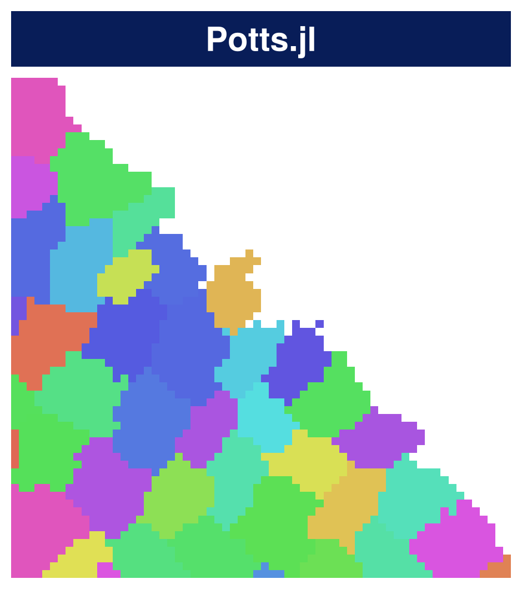
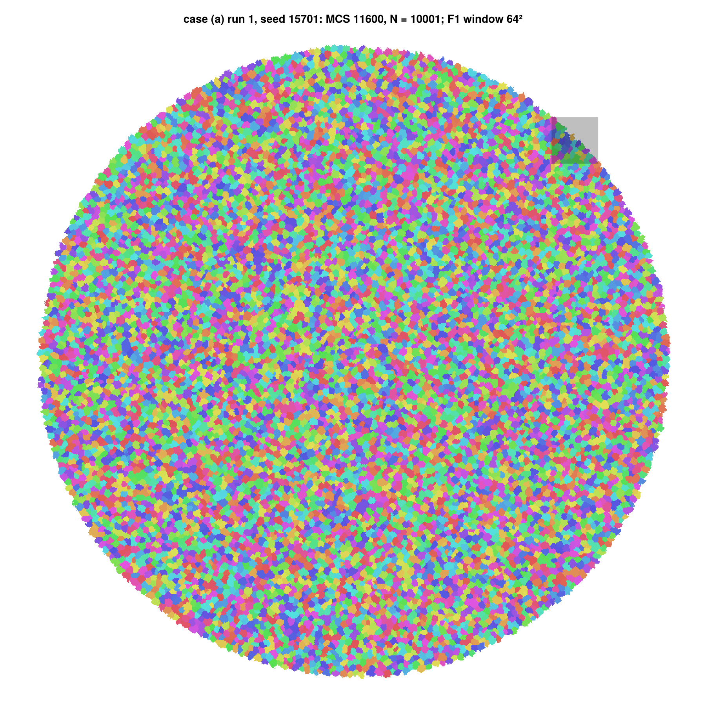
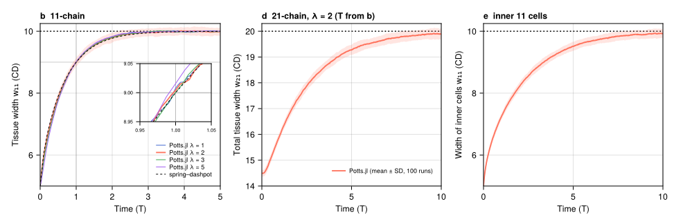
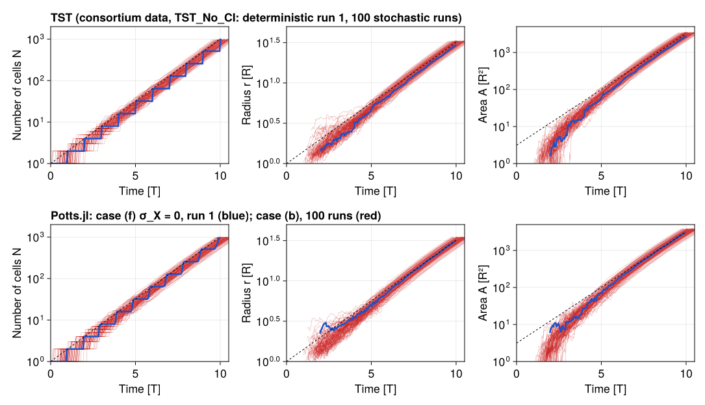
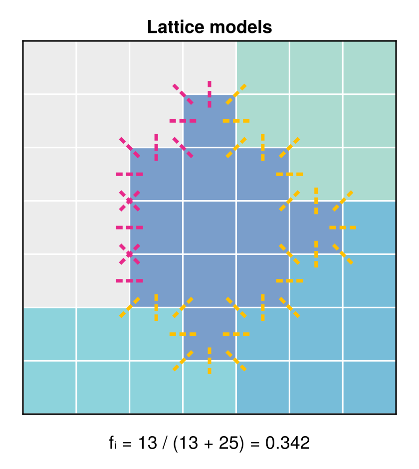
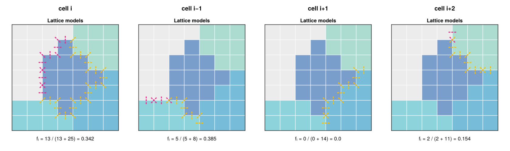
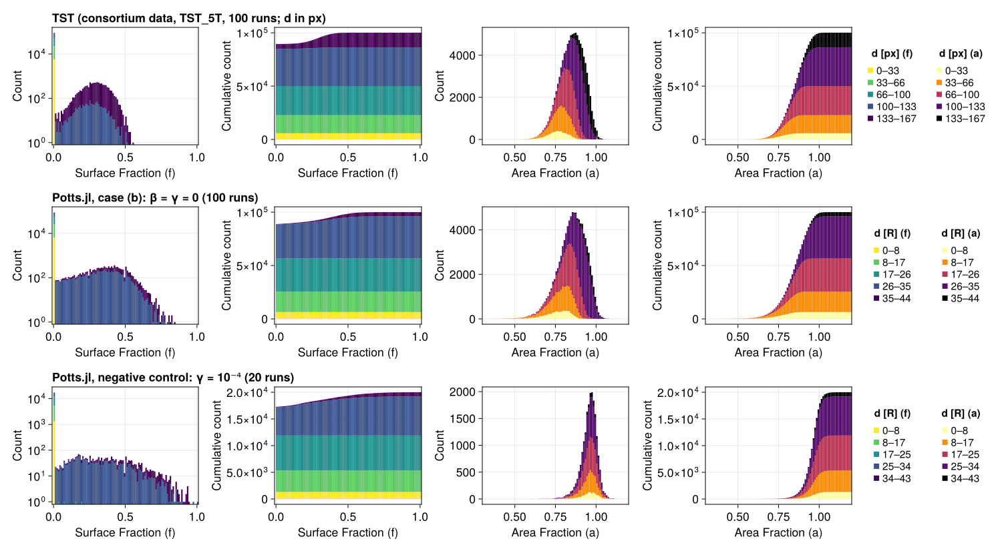
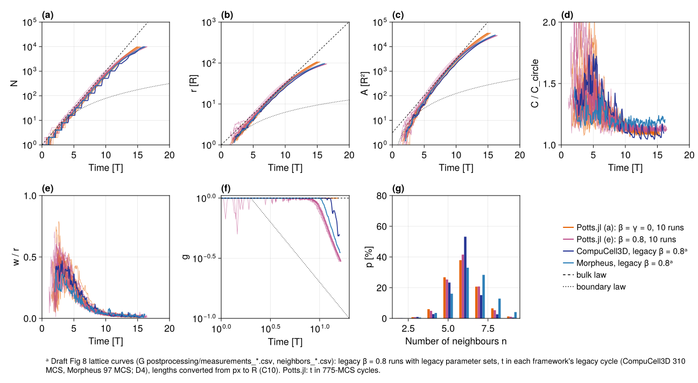

OpenVT monolayer benchmark
The OpenVT consortium compares cell-based simulation frameworks on one shared reference model: a single cell on an unbounded plane grows, divides and founds a monolayer, with optional contact inhibition of growth. The consortium's manuscript (OpenVT consortium, Reference Model for the Simulation of a Growing Tissue Monolayer with Contact Inhibition, in preparation; called M below) defines the model, the protocols, the analysis and the figures that every participating framework contributes to. This page is Potts.jl's contribution to that lineup. It follows M's order, item by item: Figures 1–8, Table 1, and the supplement's Tables S1 and S5.
Every figure on this page is read from a committed record under lib/PottsModels/reproductions/data/15/. Each record holds the verdict table, the time series or histograms, the runner, the plotting script and a provenance.toml (commit, machine, threads, wall time). The full runs were made offline (D-146); nothing on this page is simulated during the docs build. Videos are release assets of this repository. Every image and video colours each cell with its own categorical colour, and no cell outlines are drawn.
| Item | Status | Record |
|---|---|---|
| Figure 1 (Potts.jl panel) | rendered | data/15/f1-f4-2026-10-08/ |
| Figure 2 and Table S5 (chain calibration) | rendered; every target passes | data/15/calibration-2026-10-05/ |
| Figure 3 and Figure 8 | rendered; every target passes | data/15/f3-f8-2026-10-08/ |
| Figure 4 (free-surface schematic) | rendered | data/15/f1-f4-2026-10-08/ |
| Figure 5 | rendered; three of seven targets fail | data/15/f5-2026-10-07/ |
| Figure 6, Table 1, Figure 7 (threshold sweeps) | protocol frozen; full run unparked (D-174 amendment), not started | none yet (D-174) |
The failures and every other difference from M are listed in the differences table at the end of the page.
This is an independent implementation from M's text and tables; it has not been reviewed or endorsed by the consortium.
using PottsModels
using TOML, Markdown
const DATA15 = joinpath(pkgdir(PottsModels), "reproductions", "data", "15")
# a committed record: check the commit quoted in the text against its provenance
function record(dir; commit)
prov = TOML.parsefile(joinpath(DATA15, dir, "provenance.toml"))
@assert startswith(prov["commit"], commit) "$dir: provenance commit is $(prov["commit"])"
@assert prov["dirty_tracked"] === false
return prov
end
# a record's figure, copied next to the built page and shown as an image
function record_figure(dir, file; alt, width = 900)
name = "15_openvt_" * replace(dir, r"[^A-Za-z0-9]+" => "_") * "_" * file
cp(joinpath(DATA15, dir, file), name; force = true)
return HTML("<figure><img src=\"../$name\" alt=\"$alt\" style=\"max-width:100%\" " *
"width=\"$width\"></figure>")
end
# a record's TSV as rows of Dicts
function tsv(dir, file)
lines = filter(!isempty, readlines(joinpath(DATA15, dir, file)))
head = split(lines[1], '\t')
return [Dict(String(h) => String(v) for (h, v) in zip(head, split(l, '\t'))) for l in lines[2:end]]
end
# a verdict table as Markdown (vertical bars inside cells are shown as ∣, underscores
# and asterisks are escaped)
function verdict_table(rows, cols, names)
cell(s) = replace(s, "|" => "∣", "_" => "\\_", "*" => "\\*")
out = "| " * join(names, " | ") * " |\n|" * repeat(":---|", length(names)) * "\n"
for r in rows
out *= "| " * join((cell(get(r, c, "—")) for c in cols), " | ") * " |\n"
end
return Markdown.parse(out)
endThe model in Potts.jl
M's model (M §2.1, Table S1) is a cellular Potts model with an area constraint and contact energies, Metropolis acceptance at fluctuation amplitude T, and three cell-level rules:
- Growth. The reference area grows by α per MCS, $\mathrm{d}A^*_i/\mathrm{d}t = \alpha$, unless the cell is inhibited.
- Contact inhibition. Type 1: a cell grows only while $a_i = A_i/A^*_i \ge \beta$. Type 2: it grows only while its free-surface fraction $f_i \ge \gamma$, the share of its unlike contacts that face the medium. Both must hold. Growth and division are decoupled: an inhibited cell may still divide.
- Division. A cell divides when its actual area reaches $X_i A^*(0)$, with $X_i \sim N(2, 0.4)$ drawn per cell at birth. Both daughters take half the mother's reference area.
A run starts from one disc-shaped cell of area A*(0) at the centre and stops at the end of the first MCS with at least 10⁴ cells (10³ for Figures 3 and 5). Time is measured in cell cycles of 5T = A*(0)/α = 775 MCS, and lengths in R = √(A*(0)/π) = 3.989 px.
In Potts.jl the model is the published constructor OpenVTReferenceMonolayer in PottsModels (lib/PottsModels/src/openvt_reference.jl). Its definition, abridged:
@potts_model OpenVTReferenceMonolayer begin
@structural_parameters begin
lattice = (1400, 1400)
end
@kinds medium cell
@parameters begin
A₀ = 50.0; λ = 2.0; T = 20.0; α = 50 / 775
μ_X = 2.0; σ_X = 0.4; β = 0.0; γ = 0.0
J[kind, kind] = [0.0 10.0; 10.0 20.0]
end
@variables begin
A_star(cell) = A₀
X(cell) = 0.0
f(cell) = 1.0
end
@lattice Lattice(lattice; boundary = Closed(), neighborhood = Moore(1))
@relations proposal = Moore(1)
@energy begin
cells(cell) => λ * (volume - A_star)^2
contacts => J[kind, kind′]
end
@before_mcs X ~ ifelse(Pre(X) > 0, Pre(X), randn(μ_X, σ_X; lower = 0.0))
@after_mcs begin
f ~ ifelse(count(true for _ in contacts) > 0,
count(kind′ == medium for _ in contacts) / count(true for _ in contacts), 1.0)
A_star ~ ifelse((volume / Pre(A_star) >= β) && (f >= γ), Pre(A_star) + α, Pre(A_star))
end
@divide cells(cell) when = volume >= X * A₀, along = RandomPlane(), A_star => Split(),
X => randn(μ_X, σ_X; lower = 0.0)
@sweep Metropolis(; temperature = T)
end- The free-surface fraction f is the cell's medium contact pairs over all its unlike contact pairs on the Moore(1) neighbourhood, as drawn in M's Figure 4. It is updated once per MCS, after the sweep, together with growth.
- The neighbour number n of M's output files is the number of distinct cells among the Moore(1) neighbours of a cell's boundary sites (
PottsModels.openvt_frame). σ_X = 0gives M's deterministic mode, X ≡ 2.- The plane is modelled by a closed lattice large enough that the colony never reaches its edge: 400² for 10³ cells and 1400² for 10⁴ cells, with
edge_guard(5; terminate = true)stopping a run that comes within 5 sites of the edge. No run did. - Every run uses
SequentialCPM(; proposal = Moore(1))and saves every 39 MCS (≈ 1/20 cycle) and at the stop.
The cases below follow M's naming:
| Case | Parameters | Stop | Used in |
|---|---|---|---|
| (a) | β = γ = 0 (uninhibited) | 10⁴ cells | Figures 1 and 8 |
| (b) | β = γ = 0, stochastic X | 10³ cells | Figures 3 and 5 |
| (c) | β swept, γ = 0 | 10⁴ cells | Figure 6, Table 1 |
| (d) | γ swept, β = 0 | 10⁴ cells | Figures 6 and 7, Table 1 |
| (e) | β = 0.8, γ = 0 | 10⁴ cells | Figure 8 |
| (f) | β = γ = 0, X ≡ 2 (deterministic) | 10³ cells | Figure 3 |
Two negative controls are run alongside: γ = 10⁻⁴, which arrests interior cells and must fail the growth and distribution targets, and case (b) against the synchrony rule that only the deterministic case (f) can meet.
Figure 1: Overview of participating frameworks (the Potts.jl panel)
M's Figure 1 shows one 45 × 45 mm close-up of each framework's colony at 10⁴ cells, under a banner in the framework's colour. Our panel is a 64 × 64-site block of case (a), run 1 (seed 15701, 1400² lattice), at its stop: MCS 11600, N = 10001 cells. The block is centred where the 45° ray from the colony's centroid leaves the colony, so the colony fills the lower left and the medium the upper right; it holds 41 cells. The banner uses the colour RGB(8, 29, 88), our proposal for Potts.jl. Cells carry per-cell identity colours on a white medium, without outlines; the other frameworks' panels colour cells by a blue-to-red variable (see the differences table).
Record: data/15/f1-f4-2026-10-08/ (ROADMAP P6.15h), commit c6ca4bc4, rendered on the AMD Ryzen AI Max+ 395 PC (praneeth-NucBox-EVO-X2) with one thread. The rerun's stop (MCS 11600, N = 10001) equals case (a) run 1 of the Figure 3/8 record.

The whole 10⁴-cell colony at the same state, with the panel's block shaded, is fig1_colony.png:

The growth of this colony, from one cell to 10⁴, is the case (a) video in the Figure 8 section below.
Figure 2: Mechanical calibration on 1D cell chains
Before growth, M calibrates each framework's mechanical time scale on a chain of cells relaxing after compression (M §2.2). A strip of 11 cells, the middle ones compressed to half their target area during a burn-in, is released at t = 0; its width w₁₁ relaxes towards 10 cell diameters (CD). The time T at which the replicate mean crosses 90 % of the relaxation defines the framework's time unit for λ = 1, 2, 3 and 5 (panel b, Table S5). Panels d and e then test the calibrated T without refitting on a 21-cell chain (λ = 2): the total width w₂₁ and the width of the inner 11 cells.
Our protocol follows the CPM frameworks: 5-site-high periodic strip, CD = 10 px, both chain ends free, 100 replicates per λ, SequentialCPM(; proposal = Moore(1)) and a 100-MCS burn-in. The dashed curve is the spring–dashpot reference with free ends.
Record: data/15/calibration-2026-10-05/ (ROADMAP P6.15b), commit 30c39601, run on an Apple M1 Pro with 4 threads in 14 s. Panels b, d and e are drawn from the record's timeseries_11chain.tsv, timeseries_21chain.tsv and reference.tsv:

Every pre-registered row passes. The relaxation shape matches the spring–dashpot reference at every λ (mean squared error 0.38–1.69 times Table S5's); at λ = 2, w₁₁(0.5 T) = 7.859 and w₁₁(2 T) = 9.794, inside the lattice frameworks' spread of 7.83–7.87 and 9.78–9.80. With T = 156 MCS from panel b, the 21-chain gives w₂₁ = 15.96, 19.28 and 19.89 CD at 1, 5 and 10 T, within the lattice spread ± 0.15 CD, and its initial plateau ends at 0.173 T, inside the band of 0.1–0.3 T. The full verdict table is in the Table S5 section below. Panels a and c of M are schematics of the two chains and are not redrawn.
Figure 3: Comparing monolayer growth over time
M's Figure 3 follows a colony to 10³ cells: the number of cells N, the colony radius r [R] and the colony area A [R²] against time in cycles, on a log scale. One thick blue curve is a deterministic run (X ≡ 2, so all cells of a generation divide together and N steps at every cycle); the thin red curves are stochastic runs; the dashed line is the bulk law N = 2ᵗ. Our row shows case (f), run 1 (blue) and the 100 runs of case (b) (red). The upper row repeats the consortium's Tissue Simulation Toolkit (TST) runs without contact inhibition, which M's figure shows, for comparison.
Record: data/15/f3-f8-2026-10-08/ (ROADMAP P6.15f), commit a64ae188, run on the AMD Ryzen AI Max+ 395 PC (praneeth-NucBox-EVO-X2) with 12 threads: 240 runs in 9.2 core-hours. The figure is fig3.png, drawn from the record's timeseries.tsv.

The targets compare the ensemble means with TST's at t = 0.5, 1.5, …, 8.5 cycles and at the stop (L = log₂ N; r̄, Ā; t̄_s the time to 10³ cells; sync(k) the fraction of runs with exactly 2ᵏ cells at t = k + 0.5). The first table is the pre-registered verdicts, read from the record's verdicts.tsv; the second is the negative controls, which must fail.
f3f8 = tsv("f3-f8-2026-10-08", "verdicts.tsv")
cols = ["target", "case", "paper", "ours", "band", "result"]
hdr = ["Target", "Case", "Consortium (TST)", "Potts.jl", "Band", "Verdict"]
verdict_table(filter(r -> startswith(r["target"], "F3") && r["case"] in ("f", "b") &&
!occursin("must FAIL", r["band"]), f3f8), cols, hdr)| Target | Case | Consortium (TST) | Potts.jl | Band | Verdict |
|---|---|---|---|---|---|
| F3.1 max ∣L − L_TST∣ on t = 0.5:1:8.5 (log₂ N) | f | TST No_CI deterministic: L = 0.0, 1.0, 2.0, 3.0, 4.0, 5.0, 6.0, 7.0, 8.0 | 0.0 | ≤ 0.3 | PASS |
| F3.2 t̄_s / t̄_s,TST (time to 1000 cells) | f | TST No_CI deterministic: t̄_s = 10.01 cycles | 0.9954 | [0.95, 1.05] | PASS |
| F3.3 max ∣r̄/r̄_TST − 1∣ on t = 4.5:1:8.5 and at the end | f | TST No_CI deterministic: r̄ = 3.817, 5.705, 8.459, 12.38, 17.46; r̄_e = 0.9265 | 0.06905 | ≤ 0.1 | PASS |
| F3.4 max ∣Ā/Ā_TST − 1∣ on t = 4.5:1:8.5 and at the end | f | TST No_CI deterministic: Ā = 39.23, 96.43, 220.3, 479.3, 957.8; Ā_e = 2.702 | 0.1435 | ≤ 0.2 | PASS |
| F3.5 min over k = 0:3 of sync(k) | f | TST No_CI deterministic: sync = 1.0, 1.0, 1.0, 1.0 | 1.0 | ≥ 0.9 | PASS |
| F3.1 max ∣L − L_TST∣ on t = 0.5:1:8.5 (log₂ N) | b | TST No_CI stochastic: L = 0.09, 1.072, 2.05, 3.114, 4.111, 5.156, 6.182, 7.188, 8.162 | 0.1343 | ≤ 0.3 | PASS |
| F3.2 t̄_s / t̄_s,TST (time to 1000 cells) | b | TST No_CI stochastic: t̄_s = 10.24 cycles | 1.012 | [0.95, 1.05] | PASS |
| F3.3 max ∣r̄/r̄_TST − 1∣ on t = 4.5:1:8.5 and at the end | b | TST No_CI stochastic: r̄ = 3.928, 5.911, 8.795, 12.92, 18.33; r̄_e = 1.057 | 0.04476 | ≤ 0.1 | PASS |
| F3.4 max ∣Ā/Ā_TST − 1∣ on t = 4.5:1:8.5 and at the end | b | TST No_CI stochastic: Ā = 42.18, 104.5, 243.1, 530.5, 1068.0; Ā_e = 3.522 | 0.09172 | ≤ 0.2 | PASS |
verdict_table(filter(r -> occursin("must FAIL", r["band"]), f3f8), cols, hdr)| Target | Case | Consortium (TST) | Potts.jl | Band | Verdict |
|---|---|---|---|---|---|
| F3.1 max ∣L − L_TST∣ on t = 0.5:1:8.5 (log₂ N) | control | TST No_CI stochastic: L = 0.09, 1.072, 2.05, 3.114, 4.111, 5.156, 6.182, 7.188, 8.162 | 1.426 | ≤ 0.3 (control: must FAIL) | FAIL |
| F3.2 t̄_s / t̄_s,TST (time to 1000 cells) | control | TST No_CI stochastic: t̄_s = 10.24 cycles | 2.021 | [0.95, 1.05] (control: must FAIL) | FAIL |
| V5.1 slope of L on t = 4.5:1:8.5 | control | TST No_CI: slope 1.000 (det.), 1.013 (stoch.) | 0.6467 | [0.9, 1.1] (control: must FAIL) | FAIL |
| F3.5 min over k = 0:3 of sync(k) | b | TST No_CI stochastic: sync = 0.91, 0.62, 0.42, 0.17 | 0.19 | ≥ 0.9 (control: must FAIL) | FAIL |
Every pre-registered row passes, and every negative control fails, as required. The deterministic case (f) reproduces TST's synchronous doublings exactly (L = 0, 1, …, 8) and reaches 10³ cells at 9.97 cycles against TST's 10.01. Its colony area is the largest margin used: 8.6 % above TST at t = 4.5, rising to 14.3 % at t = 8.5, against a 20 % band. Potts.jl divides a cell when its actual area reaches 2A*(0), so the 512 cells of a generation divide over 0.23–0.41 cycles instead of in one MCS; TST divides on the target area. The stochastic case (b) follows TST's stochastic runs within 0.134 log₂ units in N, 4.5 % in r̄ and 9.2 % in Ā, and its synchrony decays as TST's does (0.92, 0.68, 0.41, 0.19 against 0.91, 0.62, 0.42, 0.17).
The two runs of the figure as videos: case (f) run 1 (seed 15201) and case (b) run 1 (seed 15001), one frame every 39 MCS to 10³ cells.
Download: case (f), run 1; case (b), run 1 (release reproductions-2026-10-08-openvt-f3f8).
Figure 4: The free-surface fraction
M's Figure 4 defines the free-surface fraction on a lattice: for cell i, the number of neighbour pairs that face the medium (magenta) over all its pairs with other cells or the medium (magenta and amber). Our panel draws M's 7 × 7 configuration with Potts.jl: cell i has 13 medium pairs and 25 cell pairs on Moore(1), so fᵢ = 13/(13 + 25) = 0.342, the count M's figure draws. The marks are decoded from the rendered figure and checked against a brute-force count and against the f that the model itself computes during a run (openvt_snapshot), for all four cells of the crop.
Record: data/15/f1-f4-2026-10-08/ (ROADMAP P6.15h), commit c6ca4bc4; the figure is fig4.png, rendered by plot_f4.jl (on this Mac, in seconds; the record's runner ran on the AMD Ryzen AI Max+ 395 PC).

The same construction for each of the four cells of the crop (i, i−1, i+1, i+2; f = 13/38, 5/13, 0/14 and 2/13) is fig4_cells.png:

Figure 5: 100 runs of 1000 cells
M's Figure 5 pools 100 stochastic runs of case (b), each stopped at 10³ cells, and shows four columns: the histogram and cumulative count of the free-surface fraction f, and of the area fraction a = A/A*. The cells are stacked by their distance from the initial cell's centre, in five equal bins. Our figure has three rows: the consortium's TST runs (distances in px from the pooled centroid, as in M's notebook), Potts.jl case (b) (100 runs, seeds 15001–15100) and the γ = 10⁻⁴ negative control (20 runs, seeds 15501–15520).
Record: data/15/f5-2026-10-07/ (ROADMAP P6.15e), commit 3af81ae8, run on the AMD Ryzen AI Max+ 395 PC (praneeth-NucBox-EVO-X2) with 12 threads: 120 runs in 468 s. The figure is fig5.png, drawn from the record's hist.tsv.

The targets (V4) restate M's description of the pooled lattice data. The table is read from the record's verdicts.tsv:
f5 = tsv("f5-2026-10-07", "verdicts.tsv")
verdict_table(filter(r -> r["case"] in ("b", "control") && startswith(r["target"], "V4."), f5),
["target", "case", "paper", "ours", "band", "result"],
["Target", "Case", "Consortium", "Potts.jl", "Band", "Verdict"])| Target | Case | Consortium | Potts.jl | Band | Verdict |
|---|---|---|---|---|---|
| V4.1 fraction of cells with f = 0 | b | V4: ≈ 0.89 (TST_5T, Morpheus_5T pooled) | 0.8878 | [0.86, 0.92] | PASS |
| V4.2 peak of nonzero f | b | V4: 0.25–0.35 (TST_5T, Morpheus_5T pooled) | 0.425 | [0.22, 0.38] | FAIL |
| V4.3 max f | b | V4: ≤ 0.56 (TST_5T, Morpheus_5T pooled) | 0.8472 | ≤ 0.61 | FAIL |
| V4.4 peak of a | b | V4: 0.85–0.90 (TST_5T, Morpheus_5T pooled) | 0.865 | [0.82, 0.93] | PASS |
| V4.5 range of a | b | V4: 0.42–1.09 (TST_5T, Morpheus_5T pooled) | 0.066 – 1.13 | [0.32, 1.19] | FAIL |
| V4.6 mean a | b | V4: 0.85–0.86 (TST_5T, Morpheus_5T pooled) | 0.8489 | [0.82, 0.89] | PASS |
| V4.7 mean f | b | V4: ≈ 0.03 (TST_5T, Morpheus_5T pooled) | 0.0388 | [0.02, 0.04] | PASS |
| V4.1 fraction of cells with f = 0 | control | V4: ≈ 0.89 (TST_5T, Morpheus_5T pooled) | 0.8633 | [0.86, 0.92] | PASS |
| V4.2 peak of nonzero f | control | V4: 0.25–0.35 (TST_5T, Morpheus_5T pooled) | 0.185 | [0.22, 0.38] | FAIL |
| V4.3 max f | control | V4: ≤ 0.56 (TST_5T, Morpheus_5T pooled) | 1.0 | ≤ 0.61 | FAIL |
| V4.4 peak of a | control | V4: 0.85–0.90 (TST_5T, Morpheus_5T pooled) | 0.965 | [0.82, 0.93] | FAIL |
| V4.5 range of a | control | V4: 0.42–1.09 (TST_5T, Morpheus_5T pooled) | 0.557 – 1.159 | [0.32, 1.19] | PASS |
| V4.6 mean a | control | V4: 0.85–0.86 (TST_5T, Morpheus_5T pooled) | 0.9572 | [0.82, 0.89] | FAIL |
| V4.7 mean f | control | V4: ≈ 0.03 (TST_5T, Morpheus_5T pooled) | 0.0484 | [0.02, 0.04] | FAIL |
Three of the seven rows fail for case (b): V4.2, V4.3 and V4.5. No band was relaxed. The bulk agrees with the consortium: the share of cells with f = 0 (0.888), the peak (0.865) and mean (0.849) of a, and the mean f (0.039) all pass. The rim does not: our boundary cells carry more free surface than TST's. Their mean nonzero f is 0.346 against TST's 0.288, the nonzero-f histogram peaks at 0.425 against 0.295, and 606 of 11,226 rim cells (5.4 %) lie above f = 0.56, where TST has none. At the low end of a, 30 of 100,029 cells have a < 0.42 (minimum 0.066): small, recently divided interior cells, 10 of them sister pairs. TST and Morpheus each pass all seven rows under the same rules, so the bands describe the consortium's data, and the failures are ours.
The V4.2 rule was re-frozen once after the run, because the record showed that the lowest f bin also holds 26 cells with 0 < f < 0.01: V4.2 now drops exactly the f = 0 cells instead of the whole bin. No band, seed or run changed, and every verdict is the same under both rules (D-168).
Two candidate causes were tested and ruled out on 20 runs each: dividing along TST's minor axis instead of a random plane, and a connectivity constraint. The leading remaining candidate is the division trigger: TST divides on the target area, Potts.jl (with M, CompuCell3D and Morpheus) on the actual area (C13). The same difference is the leading candidate for the slow late growth noted under Figure 6. Details are in the differences table and in the record's deviations.tsv. The negative control fails, as pre-registered: with interior cells arrested, a peaks at 0.965 and its mean is 0.957.
The two runs as videos: case (b), run 1 (seed 15001) and the control, run 1 (seed 15501), one frame every 39 MCS to 10³ cells.
Download: case (b), run 1; control, run 1 (release reproductions-2026-10-07-openvt-f5-cells-v2).
Figure 6: Time to 10⁴ cells against the inhibition thresholds
pending: FULL run parked (D-174)
The run is unparked since the D-174 amendment: the sweeps run on BoundarySiteCPM, which is equal in law to SequentialCPM (D-177), and the estimated cost is now about 45 core-hours on the PC (AMD Ryzen AI Max+ 395, CPU). The run has not started as of this build.
M's Figure 6 plots the mean time to 10⁴ cells, in cycles, against β (γ = 0, case (c)) and against γ (β = 0, case (d)), with dashed lines at 1.1, 2, 5, 10 and 20 times the uninhibited time of 13.57 cycles. The Potts.jl sweep is pre-registered (D-174): an adaptive grid with bisection near each threshold, β on 1400² and γ on 1800² lattices, runs capped at 20× (210 335 MCS). Its targets are V1 (uninhibited time within ±10 % of 13.57 cycles), V2 and V2b (the β curve and thresholds), V3 and V3b (the γ thresholds and the jump at γ → 0⁺, 61–70 cycles at γ = 10⁻⁴), with three negative controls. With SequentialCPM the full run was estimated at about 125 core-hours (PC, CPU); the switch to BoundarySiteCPM cuts it to about 45.
One of its targets is already measured. The ten case (a) runs of the Figure 3/8 record reach 10⁴ cells at 15.17 cycles (14.92–15.49), against M's 13.57; the gap opens between 10³ and 10⁴ cells. M's 13.57 is PhysiCell's γ = 0 value; TST's low-β plateau is 13.61–13.86 cycles, so TST takes about 3.4–3.6 cycles from 10³ to 10⁴ cells (from its 10.24 cycles to 10³) where we take 4.6–4.8. The F3/F8 record's README quotes about 3.3 cycles, measured from 13.57; this page uses the TST plateau. Case (e) at β = 0.8 matches TST (16.26 against 16.15 cycles). This is the V1 row of the differences table.
Per D-174, a V1 failure also makes the 1.1× β threshold of Table 1 "—".
Table 1: Inferred thresholds
pending: FULL run parked (D-174)
The run is unparked since the D-174 amendment: the sweeps run on BoundarySiteCPM, which is equal in law to SequentialCPM (D-177), and the estimated cost is now about 45 core-hours on the PC (AMD Ryzen AI Max+ 395, CPU). The run has not started as of this build.
M's Table 1 lists, per framework, the β (γ = 0) and γ (β = 0) at which the time to 10⁴ cells reaches 1.1, 2, 5, 10 and 20 times the uninhibited time. The lattice frameworks agree on β = 0.687–0.704, 0.936–0.943, 0.9867–0.9916, 1.006–1.011 and 1.020–1.024, and on γ = 0.076–0.12, 0.45–0.50 and 0.715–0.76 at 5, 10 and 20 times (no γ threshold at 1.1 and 2 times). The Potts.jl row comes from the Figure 6 sweep, with the pre-registered bands: the lattice spread ± 0.02 for β (± 0.005 from 5 times) and ± 0.05 for γ.
Figure 7: Monolayer of 10⁴ cells, β = 0, varying γ
pending: FULL run parked (D-174)
The run is unparked since the D-174 amendment: the sweeps run on BoundarySiteCPM, which is equal in law to SequentialCPM (D-177), and the estimated cost is now about 45 core-hours on the PC (AMD Ryzen AI Max+ 395, CPU). The run has not started as of this build.
M's Figure 7 shows one row per framework: the colony at 10⁴ cells for each of its Table 1 γ thresholds, labelled with γ and the time in cycles. The Potts.jl row will show five runs at our own Table 1 γ values, with cells coloured per cell, together with their videos.
Figure 8: Quantitative comparison of monolayer growth
M's Figure 8 compares colony growth to 10⁴ cells in seven panels: (a) N, (b) radius r [R], (c) area A [R²], (d) the contour length relative to a circle of the same area, C/C_circle, (e) the boundary roughness w/r, (f) the fraction of growing cells g, all against time in cycles, and (g) the histogram of neighbour numbers n at the end. Our figure shows case (a) (uninhibited) and case (e) (β = 0.8), 10 runs each on a 1400² lattice, with the bulk and boundary-limited growth laws. The CompuCell3D and Morpheus curves of M's draft figure are overlaid; they are earlier β = 0.8 runs with their own parameter sets and cycle lengths (footnoted in the figure), so only their final values are compared.
Record: data/15/f3-f8-2026-10-08/ (ROADMAP P6.15f), commit a64ae188, run on the AMD Ryzen AI Max+ 395 PC (praneeth-NucBox-EVO-X2), the same run as Figure 3. The figure is fig8.png, drawn from the record's timeseries.tsv and neighbors.tsv.

Both cases follow the bulk law 2ᵗ to a few hundred cells and then bend towards boundary-limited growth (panels a–c). The pre-registered rows, from verdicts.tsv:
verdict_table(filter(r -> (startswith(r["target"], "V5.") || startswith(r["target"], "F8.")) &&
r["case"] in ("a", "e"), f3f8),
["target", "case", "paper", "ours", "band", "result"],
["Target", "Case", "Consortium", "Potts.jl", "Band", "Verdict"])| Target | Case | Consortium | Potts.jl | Band | Verdict |
|---|---|---|---|---|---|
| V5.1 slope of L on t = 4.5:1:8.5 | a | TST No_CI: slope 1.000 (det.), 1.013 (stoch.) | 1.022 | [0.9, 1.1] | PASS |
| V5.2 max ∣L − t∣ on t = 0.5:1:8.5 | a | TST No_CI: offset 0.5 (det.), 0.4497 (stoch.) | 0.6009 | ≤ 1.0 | PASS |
| V5.1 slope of L on t = 4.5:1:8.5 | e | TST No_CI: slope 1.000 (det.), 1.013 (stoch.) | 1.009 | [0.9, 1.1] | PASS |
| V5.2 max ∣L − t∣ on t = 0.5:1:8.5 | e | TST No_CI: offset 0.5 (det.), 0.4497 (stoch.) | 0.4923 | ≤ 1.0 | PASS |
| F8.1 min g over every save | a | β = γ = 0: every cell grows | 1.0 | == 1 | PASS |
| F8.2 min C/(2√(πA)); min w (saves with N ≥ 3) | a | isoperimetric inequality | 1.059; 0.06212 | ≥ 1 − 1e-9; ≥ 0 | PASS |
| F8.2 min C/(2√(πA)); min w (saves with N ≥ 3) | e | isoperimetric inequality | 1.073; 0.01617 | ≥ 1 − 1e-9; ≥ 0 | PASS |
| F8.3 mean n, pooled final histogram | a | legacy CompuCell3D 5.842, Morpheus 6.48 (β = 0.8, D4) | 5.97 | [5.542, 6.78] | PASS |
| F8.4 mean g at the 10⁴-cell stop | e | legacy CompuCell3D 0.4987, Morpheus 0.3498 (β = 0.8, D4) | 0.2973 | [0.2498, 0.5987] | PASS |
Every row passes. Some of them cannot fail by construction, and we say so: F8.1 (g ≡ 1 without inhibition), F8.2 (the isoperimetric inequality) and F8.3, whose band contains 6, the mean neighbour number of any confluent planar tiling. V5 does not separate β = 0.8 from β = 0 on its window, because type 1 inhibition acts later. The rows that discriminate are F8.4 (g at 10⁴ cells: 0.297 for case (e), 1 for case (a)), the synchrony and end values of Figure 3, and the time to 10³ cells. Case (a) reaches 10⁴ cells at 15.17 cycles, later than M's 13.57 (see Figure 6 and the differences table).
The two colonies as videos: case (a), run 1 (seed 15701; the Figure 1 state is its last frame) and case (e), run 1 (seed 15801), one frame every 39 MCS to 10⁴ cells, the view zooming out with the colony.
Download: case (a), run 1; case (e), run 1 (release reproductions-2026-10-08-openvt-f3f8).
Table S1: CPM parameters
Potts.jl uses M's Table S1 unchanged; these are the defaults of OpenVTReferenceMonolayer:
| Symbol | Value | Units | Meaning | Potts.jl keyword |
|---|---|---|---|---|
| J_cc | 20.0 | — | cell–cell contact energy | J[cell, cell] |
| J_cm | 10.0 | — | cell–medium contact energy | J[cell, medium] |
| λ | 2.0 | — | area stiffness | λ |
| A*(0) | 50 | px | initial reference area | A₀ |
| T | 20 | — | fluctuation amplitude | T |
| α | 6.452 × 10⁻² | px/MCS | reference-area growth rate (50/775) | α |
| μ_Amax | 100 | px | mean division area (μ_X A*(0)) | μ_X = 2 |
| σ | 0.4 | — | standard deviation of X (M §2.1) | σ_X |
| β, γ | 0 | — | inhibition thresholds (by case) | β, γ |
Settings that Table S1 leaves to each framework, with ours: the contact and copy neighbourhood (Moore(1), eight neighbours, for both), the update scheme (SequentialCPM: one copy attempt per lattice site per MCS, random order), the lattice (closed, 400² or 1400², with a 5-site edge guard) and the save cadence (every 39 MCS and at the stop). The calibration of Figure 2 uses its own chain set-up (λ = 1, 2, 3, 5; 5-site-high periodic strip).
Table S5: Mechanical time scale T against λ
Table S5 gives, per λ, the relaxation time T of the 11-cell chain in MCS and the mean squared error between the mean relaxation curve and the spring–dashpot reference. Our column is computed from the Figure 2 record (data/15/calibration-2026-10-05/, commit 30c39601, Apple M1 Pro), read from its verdicts.tsv; the per-run crossing times are in crossings.tsv.
cal = tsv("calibration-2026-10-05", "verdicts.tsv")
num(s) = match(r"[0-9]+(\.[0-9]+)?(e-?[0-9]+)?", last(split(s, ":"))).match
s5 = "| λ | T, Table S5 (MCS) | T, Potts.jl (MCS) | MSE, Table S5 | MSE, Potts.jl |\n|---|---|---|---|---|\n"
for λ in (1, 2, 3, 5)
t = only(filter(r -> startswith(r["target"], "V6 T(λ = $λ)"), cal))
m = only(filter(r -> startswith(r["target"], "V7 MSE") && occursin("(λ = $λ)", r["target"]), cal))
global s5 *= "| $λ | $(num(t["paper"])) | $(num(t["ours"])) | $(num(m["paper"])) | $(num(m["ours"])) |\n"
end
Markdown.parse(s5)| λ | T, Table S5 (MCS) | T, Potts.jl (MCS) | MSE, Table S5 | MSE, Potts.jl |
|---|---|---|---|---|
| 1 | 290 | 297 | 7.57e-4 | 1.28e-3 |
| 2 | 155 | 156 | 2.66e-3 | 1.02e-3 |
| 3 | 110 | 111 | 4.43e-3 | 4.06e-3 |
| 5 | 75 | 77 | 1.38e-2 | 1.05e-2 |
T decreases strictly with λ and lies within 3 % of Table S5 at every λ; the mean squared errors are 0.38–1.69 times Table S5's. At λ = 2, the value used for growth, T = 156 MCS against 155. Every row of the calibration record:
verdict_table(cal, ["target", "paper", "ours", "tolerance", "result"],
["Target", "Table S5 or lattice spread", "Potts.jl", "Band", "Verdict"])| Target | Table S5 or lattice spread | Potts.jl | Band | Verdict |
|---|---|---|---|---|
| V6 T(λ = 1), MCS | Table S5: 290 | 297 (1.024 × S5) | ±15 %: [246.5, 333.5] | PASS |
| V7 run covers 5 T (λ = 1) | — (run validity) | 5T = 1485, run to 2030 | 5T ≤ 7 T_S5 | PASS |
| V7 MSE vs spring–dashpot (λ = 1) | Table S5: 7.57e-4 | 1.28e-3 (1.69 × S5) | ≤ 3 × S5 = 2.27e-3 | PASS |
| V6 T(λ = 2), MCS | Table S5: 155 | 156 (1.006 × S5) | ±15 %: [131.8, 178.2] | PASS |
| V7 run covers 5 T (λ = 2) | — (run validity) | 5T = 780, run to 1085 | 5T ≤ 7 T_S5 | PASS |
| V7 MSE vs spring–dashpot (λ = 2) | Table S5: 2.66e-3 | 1.02e-3 (0.38 × S5) | ≤ 3 × S5 = 7.99e-3 | PASS |
| V7 w₁₁(0.5 T) (λ = 2), CD | lattice spread 7.83–7.87 (TST, Morpheus-J10, Artistoo); reference 7.9 | 7.859 | spread ± 0.1: [7.73, 7.97] | PASS |
| V7 w₁₁(2.0 T) (λ = 2), CD | lattice spread 9.78–9.8 (TST, Morpheus-J10, Artistoo); reference 9.77 | 9.794 | spread ± 0.1: [9.68, 9.9] | PASS |
| V6 T(λ = 3), MCS | Table S5: 110 | 111 (1.009 × S5) | ±15 %: [93.5, 126.5] | PASS |
| V7 run covers 5 T (λ = 3) | — (run validity) | 5T = 555, run to 770 | 5T ≤ 7 T_S5 | PASS |
| V7 MSE vs spring–dashpot (λ = 3) | Table S5: 4.43e-3 | 4.06e-3 (0.92 × S5) | ≤ 3 × S5 = 1.33e-2 | PASS |
| V6 T(λ = 5), MCS | Table S5: 75 | 77 (1.027 × S5) | ±15 %: [63.8, 86.2] | PASS |
| V7 run covers 5 T (λ = 5) | — (run validity) | 5T = 385, run to 525 | 5T ≤ 7 T_S5 | PASS |
| V7 MSE vs spring–dashpot (λ = 5) | Table S5: 1.38e-2 | 1.05e-2 (0.76 × S5) | ≤ 3 × S5 = 4.13e-2 | PASS |
| V6 T strictly decreasing in λ | 290 > 155 > 110 > 75 | 297 > 156 > 111 > 77 | strict | PASS |
| V8 w₂₁(1 T) (λ = 2, T = 156), CD | lattice spread 15.9–16.25 (CC3D, Morpheus-J10, TST, Artistoo) | 15.959 | spread ± 0.15: [15.75, 16.4] | PASS |
| V8 w₂₁(5 T) (λ = 2, T = 156), CD | lattice spread 19.2–19.57 (CC3D, Morpheus-J10, TST, Artistoo) | 19.281 | spread ± 0.15: [19.05, 19.72] | PASS |
| V8 w₂₁(10 T) (λ = 2, T = 156), CD | lattice spread 19.9–19.96 (CC3D, Morpheus-J10, TST, Artistoo) | 19.889 | spread ± 0.15: [19.75, 20.11] | PASS |
| V8 inner w₁₁(1 T) (λ = 2, T = 156), CD | lattice spread 7.2–7.51 (CC3D, Morpheus-J10, TST, Artistoo) | 7.241 | spread ± 0.15: [7.05, 7.66] | PASS |
| V8 inner w₁₁(5 T) (λ = 2, T = 156), CD | lattice spread 9.46–9.71 (CC3D, Morpheus-J10, TST, Artistoo) | 9.514 | spread ± 0.15: [9.31, 9.86] | PASS |
| V8 inner w₁₁(10 T) (λ = 2, T = 156), CD | lattice spread 9.92–9.96 (CC3D, Morpheus-J10, TST, Artistoo) | 9.925 | spread ± 0.15: [9.77, 10.11] | PASS |
| V8 plateau end (w̄₂₁ ≥ w̄₂₁(0) + 0.05), T | 0.15–0.22 T (lattice spread) | 0.173 (27 MCS; w̄₂₁(0) = 14.501) | [0.1, 0.3] T | PASS |
| P8 per-run crossing (λ = 1), MCS | — (Morpheus Event) | median 290, mean 291.8 ± 33.2 (SD), 100/100 cross | — | info |
| P8 per-run crossing (λ = 2), MCS | — (Morpheus Event) | median 154, mean 156.1 ± 13.7 (SD), 100/100 cross | — | info |
| P8 per-run crossing (λ = 3), MCS | — (Morpheus Event) | median 112, mean 111.2 ± 8.6 (SD), 100/100 cross | — | info |
| P8 per-run crossing (λ = 5), MCS | — (Morpheus Event) | median 76, mean 76.9 ± 4.9 (SD), 100/100 cross | — | info |
| P12 cycle 5 × T(2), MCS | 775 (α, M) | 780 | — | info |
Differences from the manuscript
One row per difference between our runs and M, per conflict between M and the consortium's other sources and the reading we took (spec 15 §1.1, C1–C17), and per failed or at-risk target (D-154). The columns are our value, M's value, the suspected cause and the status of the question to the authors: "not an author question", "not asked" (the question is on our open question list, spec 15 §7) or "resolved" (settled from the consortium's public data).
| Item | Ours | Manuscript (M) | Suspected cause | Author question |
|---|---|---|---|---|
| V4.2 peak of nonzero f (FAIL) | 0.425 (100 runs, 11,226 cells with f > 0); 0.395–0.435 for smoothing windows of 1–11 bins; mean nonzero f 0.346 | 0.25–0.35 (TST and Morpheus pooled); TST alone 0.295, mean nonzero f 0.288 | leading: Potts.jl divides on actual area, TST on target area (C13). Not the Morpheus f definition or σX (C17): TST alone uses our f and σX = 0.4 and passes. Ruled out on 20 runs each: the division axis and a connectivity constraint | not asked; on our open question list as Q20 (leading) and Q23 |
| V4.3 max f (FAIL) | 0.847; 606 of 11,226 rim cells (5.4 %) above 0.56 | at most 0.56, no cell above (TST max 0.553) | the same upward shift of the rim cells' f as V4.2; causes as for V4.2 | not asked; on our open question list as Q20 (leading) and Q23 |
| V4.5 range of a (FAIL) | 0.066–1.130; 30 of 100,029 cells below 0.42, all small interior cells born shortly before, 10 of them sister pairs | 0.42–1.09; TST 0.425–1.092 with no cell below 0.42 | squeezed young daughters, cause unresolved; leading candidate the target-area division (C13). A connectivity constraint raises the minimum but not the count | not asked; on our open question list as Q20 (leading) and Q24 |
| V1 time to 10⁴ cells, uninhibited (measured in the Figure 3/8 record; judged with the sweeps) | 15.17 cycles (case (a), 10 runs, 14.92–15.49); 9 of 10 runs above the band; case (e) at β = 0.8: 16.26 | 13.57 cycles (PhysiCell's γ = 0 value), band ± 10 % = 12.21–14.93; TST low-β plateau 13.61–13.86; TST at β = 0.8: 16.15 | about 11.8 % slow. The gap opens beyond 10³ cells (TST takes about 3.4–3.6 cycles from 10³ to 10⁴ cells, we take 4.6–4.8), past the Figure 3 window. Leading candidate: division on actual area (M, C13) against TST's division on target area, as for V4 | not asked; on our open question list as Q20, and Q17 (whether 13.57 is pooled or one framework's value) |
| F1 panel colours | per-cell identity colours (one categorical colour per cell), white medium, no outlines | the other frameworks' panels colour cells by a blue-to-red variable (most likely cell area) with grey boundaries | a stylistic choice: per-cell colours, never outlines (D-156, D-175) | not asked; on our open question list as Q10 (the colour variable) and Q18 (the Potts.jl colour, RGB(8, 29, 88) proposed) |
| F1 window | a 64 × 64-site block (about 8 cell diameters) centred on the colony rim | 45 × 45 mm close-ups; the window size is not stated | estimated from the TST close-up; the other panels show more colony than medium | not an author question |
| F2 consortium curves | Potts.jl curves and the spring–dashpot reference only | panels b, d, e overlay all frameworks | the consortium's curves are compared through the frozen spread values (the Table S5 section), not redrawn | not an author question |
| F3 time axis and framework | t in 775-MCS cycles; TST shown as the comparison row | axis "[T]"; the framework of M's Figure 3 is not named | read as cycles, as the TST data imply | not asked; on our open question list as Q2 (open part) and Q13 |
| F3.4 colony area, case (f) | 14.3 % above TST at t = 8.5 (passes the 20 % band, the largest margin used) | TST deterministic | division on actual area (C13): cells of one generation divide over 0.23–0.41 cycles, not in one MCS | not asked; on our open question list as Q20 |
| F4 drawing | cell i's outline and the in-panel names left out; counts as numbers | a black outline of cell i, names, coloured count glyphs | no outlines (D-156) | not an author question |
| F5 distance bins and origin | 5 equal bins from 0 to 1.05 times the furthest distance (0–8, …, 35–44 R), from the initial cell's centre | legend 0–7, …, 31–39; the notebook uses 7 bins from the pooled centroid | M's figure and text taken over its notebook (C11, C12) | not asked; on our open question list as Q15 |
| F6, T1, F7 | not run; protocol and targets frozen | Figure 6, Table 1, Figure 7 | the full sweep has not run yet: unparked by the D-174 amendment, on BoundarySiteCPM (equal in law to SequentialCPM, D-177), about 45 core-hours on the PC (CPU) | not an author question |
| F8 consortium curves | CompuCell3D and Morpheus curves of M's draft overlaid, converted from px to R; only final values compared | lengths in R, time in cycles | the draft curves are earlier β = 0.8 runs in each framework's own cycle length | not asked; on our open question list as Q7 and Q14 |
| Domain | closed 400² or 1400² lattice with a 5-site edge guard; no run came closer than 33 sites | unbounded plane | a finite lattice the colony never reaches is equivalent | not an author question |
| Division axis | random plane | not stated for CPMs (CompuCell3D and Morpheus: random; TST: minor axis) | majority practice; TST's minor axis tested on 20 runs and it does not change V4 | not an author question |
| C1 cell-cycle length | one cycle = 5T = 775 MCS | M says the cycle is 5T but also, once, that time is in units of T | M contradicts itself; its tables and the TST data fix 5T | resolved: 5T = 775 MCS from the consortium data (Q2 on our open question list) |
| C2 calibration compression | target area halved during a burn-in, both chain ends free | left to each framework | the four CPM implementations all do this | not an author question |
| C3 truncation of X | X redrawn while X ≤ 0 | silent; the schema redraws | P(X ≤ 0) is about 3 × 10⁻⁷, so it never fires | not an author question |
| C4 replicates | 100 runs for Figures 2 and 5, 10 or more per Figure 3/8 case | 100 for Figure 5; the schema's floor is 10 | M where it states a number | not an author question |
| C5 sensitivity analysis | not done | not in M's analysis list (only in the schema) | M's list taken as complete | not an author question |
| C6 literature comparisons | not done | not in M (only in the schema) | M taken over the schema | not an author question |
| C7 cell diameter CD | 10 px, the relaxed length of a cell on the 5-px strip | not defined numerically; the schema gives 7.98 px | only 10 px makes the relaxed 11-chain 10 CD wide, as M's Figure 2 requires | not an author question |
| C8 output columns | x, y, i, n, with g = (i == 0) derived for the analysis | x, y, i, n (the analysis code reads x, y, g, n) | M for submitted files | not an author question |
| C9 type 1 inequality | a ≥ β | a ≥ β (the schema has a > β) | M, as Morpheus, TST and Artistoo | not an author question |
| C10 Figure 8 length units | R | R; the draft figure's lattice curves are in px | M | not asked; on our open question list as Q14 |
| C11 Figure 5 distance bins | 5 equal bins | 5 bins in the legend; 7 in the notebook | M's figure | not asked; on our open question list as Q15 |
| C12 Figure 5 distance origin | the initial cell's centre (the lattice centre) | the initial cell's centre; the notebook uses the pooled centroid | M's text | not asked; on our open question list as Q15 |
| C13 division trigger | actual area ≥ X A*(0) | actual area ≥ X A*(0); TST uses the target area | M, with CompuCell3D and Morpheus. This is the leading candidate for the V4 failures and the slow V1 growth | not asked; on our open question list as Q20 |
| C14 daughters' reference area | half the mother's A* | half the mother's A* (Morpheus sets it to the daughter's area) | M, with CompuCell3D, TST and Artistoo | not an author question |
| C15 termination | end of the first MCS with at least 10⁴ cells | the same; CompuCell3D stops at 10,200 | M | not an author question |
| C16 growth rate | α = 50/775 px/MCS | 6.452 × 10⁻² (Table S1); TST uses 50/770 | M | not an author question |
| C17 σ of X | 0.4 | 0.4; Morpheus passes 0.16 as the standard deviation | M; it cannot explain V4, since TST uses 0.4 and passes | not asked; on our open question list as Q21 |
Records and reproduction
Each record directory holds its runner, its plotting scripts and a README that describes the protocol, every file and the result. The runners rerun the frozen acceptance tests' own protocols (lib/PottsModels/test/reproductions/15_openvt_*.jl), and the tests recompute every verdict from the committed TSVs.
| Record | Item | Runner | Machine | Commit |
|---|---|---|---|---|
calibration-2026-10-05 | Figure 2, Table S5 | run_calibration.jl | Apple M1 Pro, 4 threads | 30c39601 |
f5-2026-10-07 | Figure 5 | run_f5.jl | AMD Ryzen AI Max+ 395, 12 threads | 3af81ae8 |
f3-f8-2026-10-08 | Figures 3 and 8 | run_f3_f8.jl | AMD Ryzen AI Max+ 395, 12 threads | a64ae188 |
f1-f4-2026-10-08 | Figures 1 and 4 | run_f1.jl, plot_f4.jl | AMD Ryzen AI Max+ 395, 1 thread | c6ca4bc4 |
The videos are rendered from run 1 of each case by the records' video_*.jl scripts and published in the releases reproductions-2026-10-07-openvt-f5-cells-v2 and reproductions-2026-10-08-openvt-f3f8. The consortium's data are never copied into this repository: the TST and legacy rows of Figures 3, 5 and 8 are drawn from a local clone of the consortium's public repository, and only the rendered figures and small summary statistics are committed.
How to cite
Cite the OpenVT consortium's monolayer reference model first, then PottsModels at the version and commit of the records above:
Markdown.parse("PottsModels $(pkgversion(PottsModels)); records at commits `30c39601`, " *
"`3af81ae8`, `a64ae188` and `c6ca4bc4`.")PottsModels 0.1.0-DEV; records at commits 30c39601, 3af81ae8, a64ae188 and c6ca4bc4.
| Date | Change | Reason |
|---|---|---|
| 2026-10-08 | First version: Figures 1–5 and 8 and Tables S1 and S5 from the committed records; Figure 6, Table 1 and Figure 7 shown as parked; the differences table with C1–C17, the three V4 failures and the V1 slow growth | ROADMAP P6.15i; D-178 |